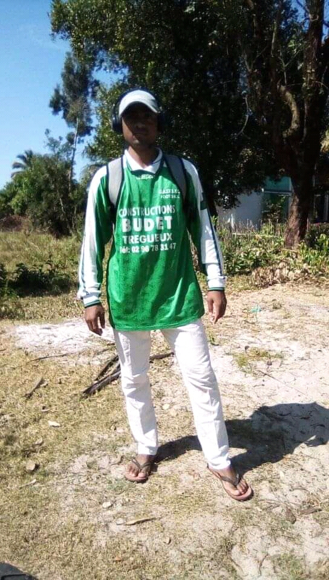

My name is Ratongamanahaja Francois Valentino Jacquit, the first son of Francois Jacquit and Rasoarinajaina Fanjarivelina. I am from Andilamena, but studying in Mahanoro. I'm twenty three years old now, born in 1996. I'm not really tall but not really short. For as I like keeping fit, I have a medium size, not really thin but not really fat. I've been studying for many years in my village, but I still keep studying at ONJA school now. I'm not good at writing and I'm not use to it but now I'm trying to take to it. I'm sorry if I still can't express myself perfectly, but that's all what I can tell you about myself.

My favorite hobbies
I am really keen on listening to music, not only to have fun, but also to make myself in a good temper when I have a problem or I am angry. But the most I spend my free time is reding books. I love reading because it helps me to improve my english, including my speaking and grammar. On top of that, it keeps my mind being awake to english, and also develops a broader vocabulary, increased general knowledge and a better understanding of other cultures. This is the most important, because english is easy to learn but easy to forget. So reading is a way to remind myself to use english all the time. It's also an opportunity to learn a new skills.
Apart from that I like practicing sport. One of the main benefits of doing this is to boost my physical and mental health. Moreover, sport helps me to learn time management and responsibility. According to this great saying Healthy mind lives in a Healthy Body. I fell better and comfortable after practicing sport and I always get enough sleep.